01 / 智能客服
让商城咨询在一个窗口里得到更自然的响应。
展示官网商城客服浮窗、客服插件配置与智能问答 / 商品推荐规则等相关界面。
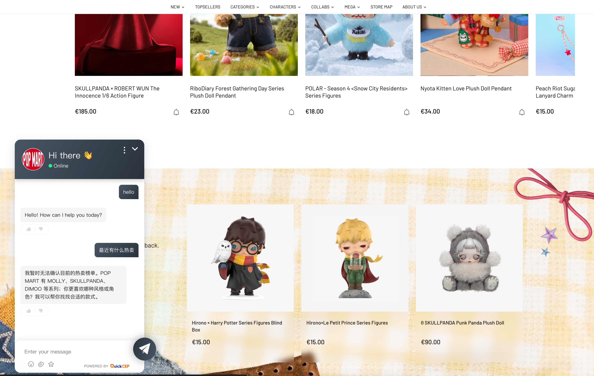
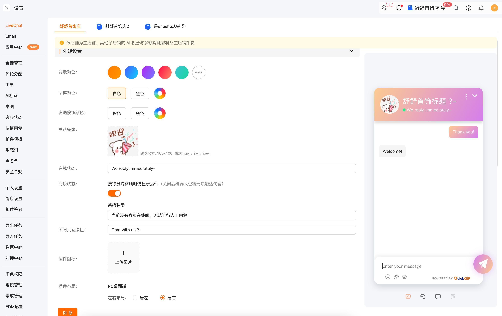
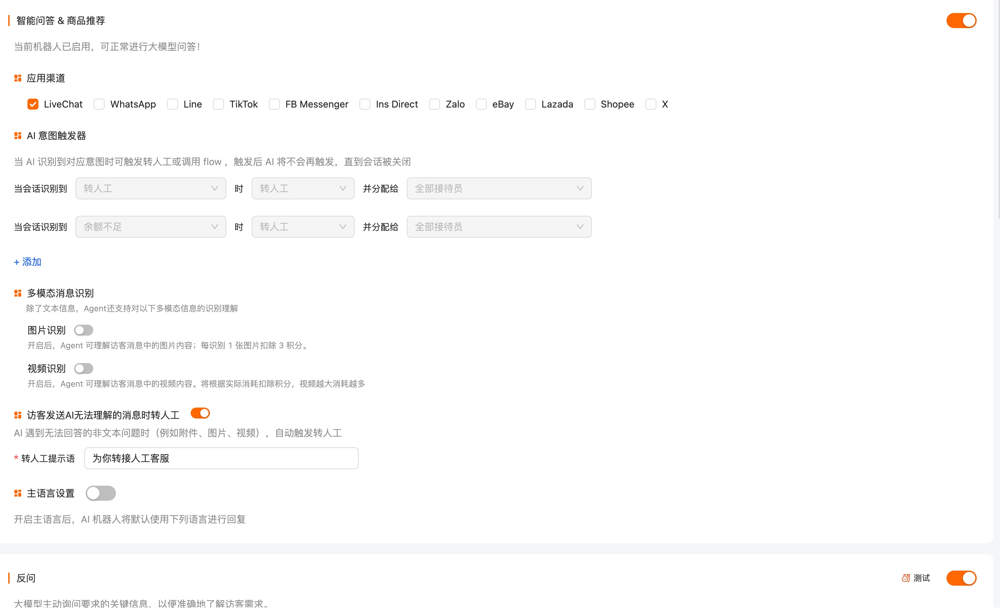
以下内容展示本人任职期间参与的产品与业务项目，按实际参与场景梳理：智能客服、AI 智能体、业务工作流、知识库、平台集成与社交直播。
POP MART · 智能客服与智能体
围绕官网商城客服体验、客服配置与智能问答能力，参与构建面向消费者咨询场景的智能化服务能力。
展示官网商城客服浮窗、客服插件配置与智能问答 / 商品推荐规则等相关界面。



展示智能体配置、知识库、Skills 与工具调用的协同关系。
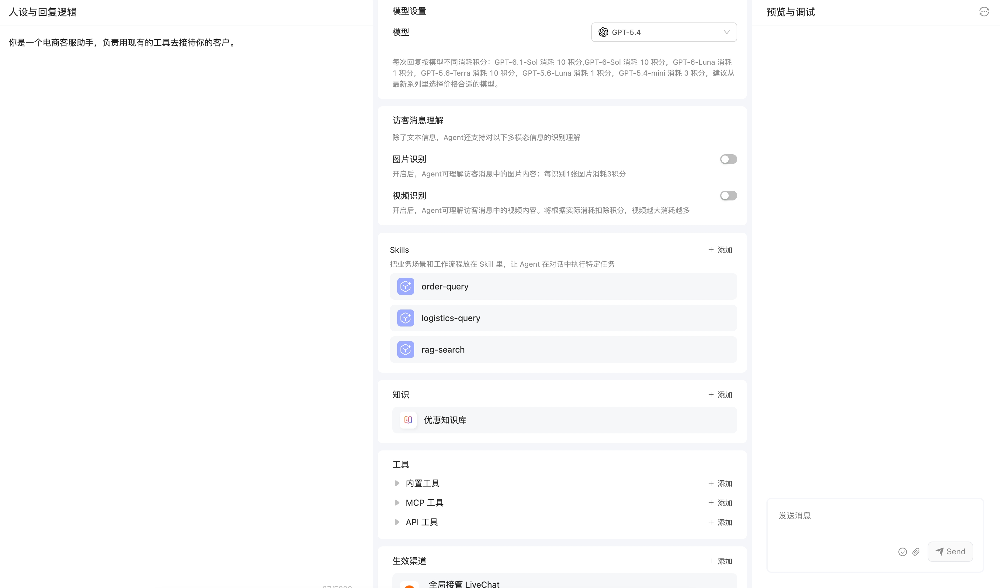
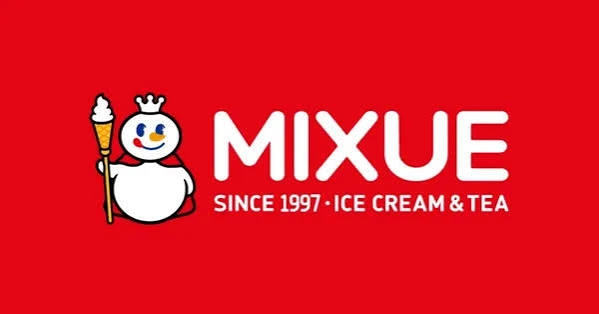
MIXUE · 工作流与会话协同
通过工作流编排与统一会话工作台，展示业务知识调用、自动化处理和人工协同的产品界面。
展示由知识提取、LLM、函数节点、知识调用与消息发送组成的工作流。
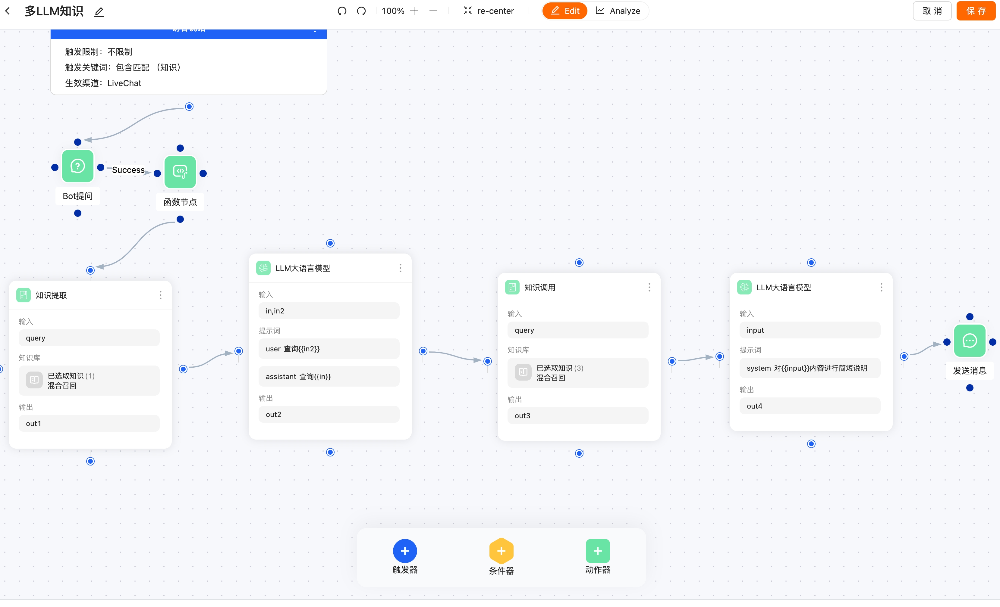
展示会话列表、消息区、客户资料、状态与工单等协同信息。
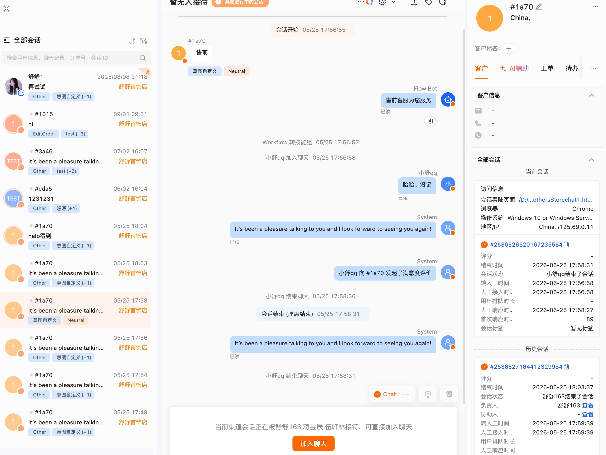
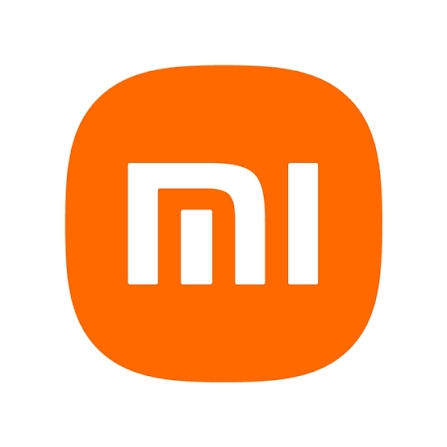
XIAOMI · 知识库与社交平台集成
围绕商品与业务知识沉淀，以及社交、电商、建站等平台连接，参与建设可扩展的业务协同能力。
展示多类型商品知识库的管理列表与状态信息。
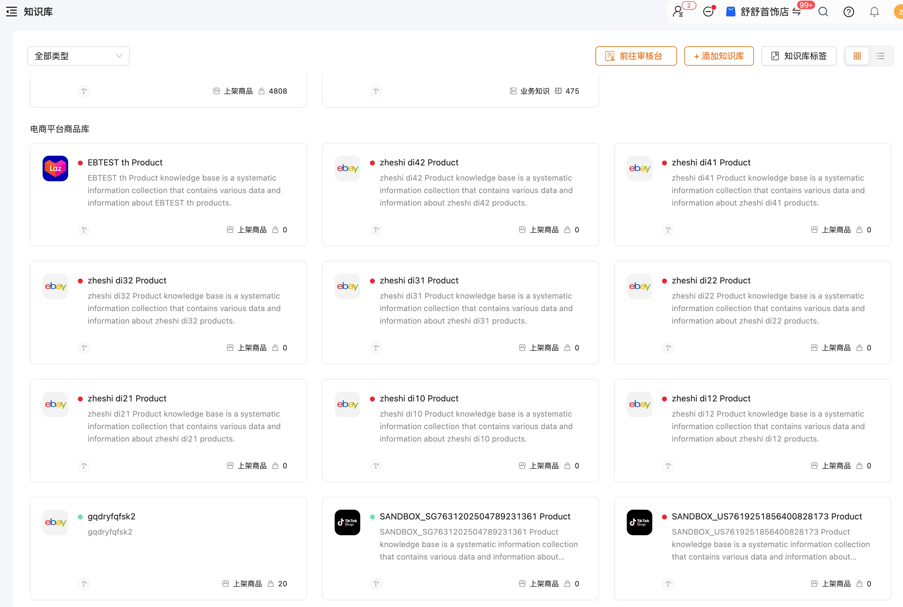
展示社交媒体、电商平台、建站平台和企业工具的连接入口与集成管理。
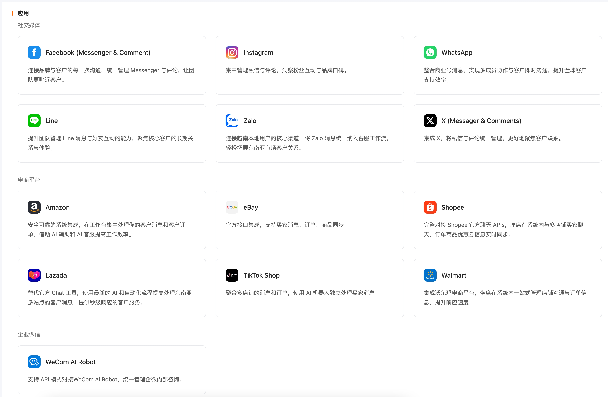
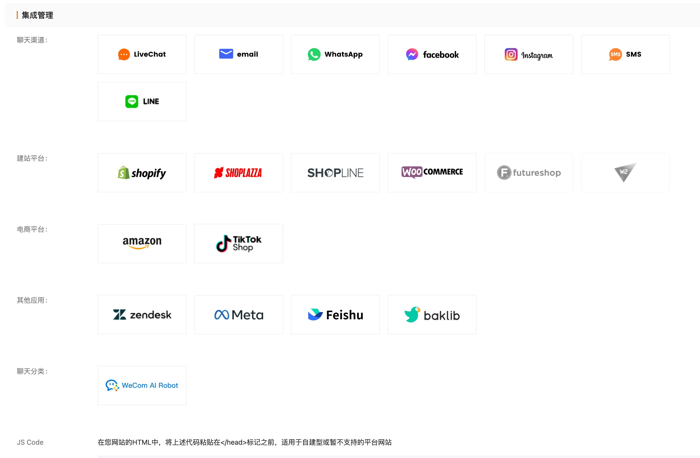
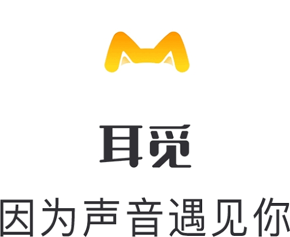
ERMI · 声音社交产品体验
围绕声音社交场景，展示语音派对、唱歌交友与直播 PK 等业务产品界面。
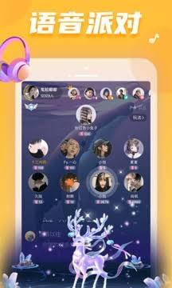
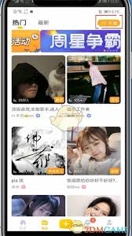
说明：以上为本人任职期间参与项目的界面与场景展示，不代表独立商业承接；品牌标识仅用于说明项目经历，不构成品牌官方背书。